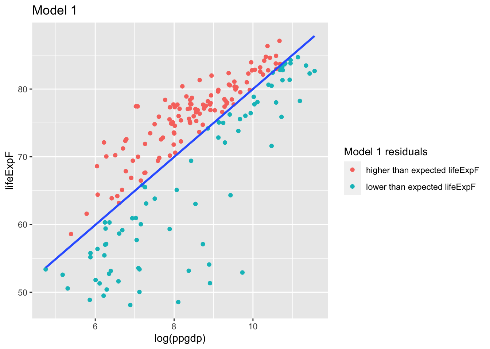
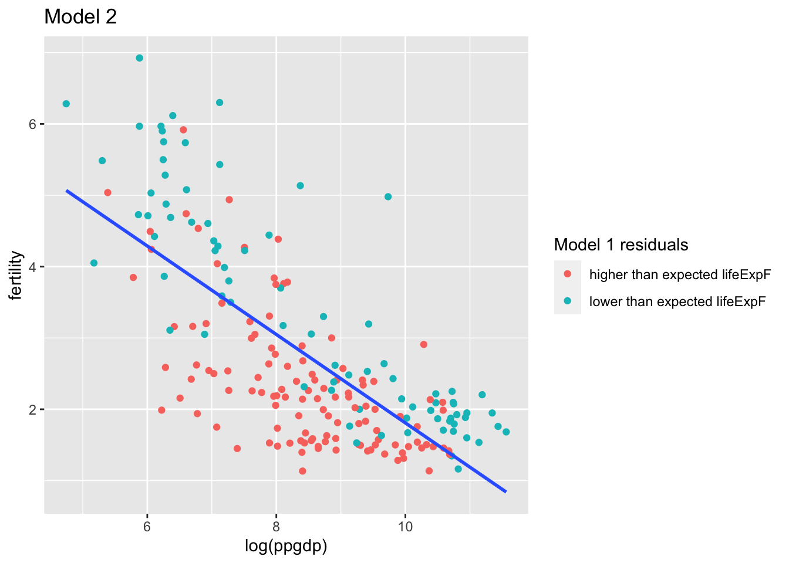
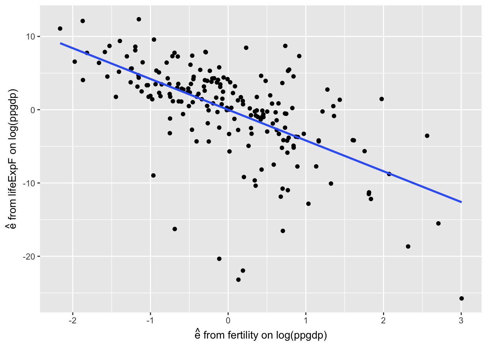

Chapter 2 Added variable plots
p. 54 Figure 3.3(a)
- Compute the regression of
lifeExpFonlog(ppgdp):
##
## Call:
## lm(formula = u$lifeExpF ~ log(u$ppgdp))
##
## Coefficients:
## (Intercept) log(u$ppgdp)
## 29.815 5.019## [1] 0.5963835u$`Model 1 residuals` <- ifelse(mod1$residuals > 0, "higher than expected lifeExpF", "lower than expected lifeExpF")g <- ggplot(u, aes(log(ppgdp), lifeExpF, label = rownames(u), color = `Model 1 residuals`)) +
geom_point() +
geom_smooth(aes(group = 1), method = "lm", se=FALSE, show.legend =FALSE) +
ggtitle("Model 1")
g
The residuals from this model are the part of the response lifeExpF not explained by the regression on log(ppgdp)
- Compute the regression of
fertilityonlog(ppgdp).
The residuals from this model are the part of the new regressor fertility not explained by the regression on log(ppgdp)
##
## Call:
## lm(formula = u$fertility ~ log(u$ppgdp))
##
## Coefficients:
## (Intercept) log(u$ppgdp)
## 8.0097 -0.6201## [1] 0.5199563g <- ggplot(u, aes(log(ppgdp), fertility, label = rownames(u), color = `Model 1 residuals`)) +
geom_point() +
geom_smooth(aes(group = 1), method = "lm", se=FALSE, show.legend = FALSE) +
ggtitle("Model 2")
g
- The added variable plot is of the unexplained part of the response from (1) on the unexplained part of the added regressor from (2).
residdf <- tibble::tibble(r1 = mod1$residuals,
r2 = mod2$residuals)
g <- ggplot(residdf, aes(r2, r1)) +
geom_point() +
xlab(expression(paste(hat(e), " from fertility on log(ppgdp)"))) +
ylab(expression(paste(hat(e), " from lifeExpF on log(ppgdp)"))) +
geom_smooth(method = "lm", se=FALSE)
g The slope of this regression line is:
##
## Call:
## lm(formula = residdf$r1 ~ residdf$r2)
##
## Coefficients:
## (Intercept) residdf$r2
## 7.681e-16 -4.199e+00It is the same as the coefficient of \(\hat{\beta_2}\) with both regressors:
##
## Call:
## lm(formula = lifeExpF ~ fertility + logppgdp, data = u)
##
## Coefficients:
## (Intercept) fertility logppgdp
## 63.448 -4.199 2.415